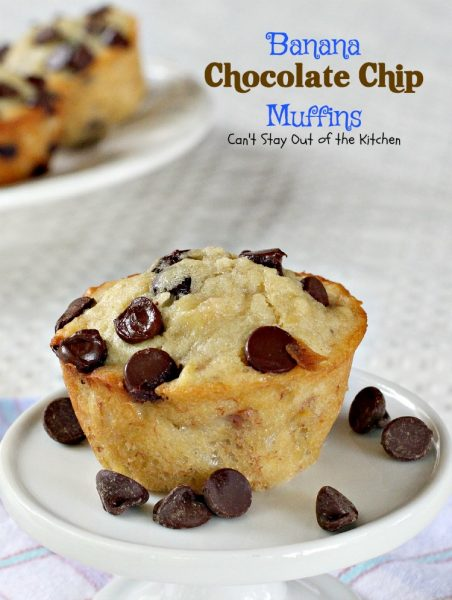

Banana Chocolate Chip Muffins

Try boosting your morning routine with these!
These muffins will make you want to jump out of bed in the morning. They are simple, but so delicious. The moist muffins filled with warm, melted pockets of chocolate will make these disappear from your table quickly.
Ingredients
- 1 1/2 cup UNBLEACHED all-purpose flour (bleached flour toughens baked goods)
- 2/3 cup sugar
- 1 1/2 teaspoon baking powder
- 1/4 teaspoon salt
- 2 large or 3 small-medium ripe bananas, mashed
- 1 large egg
- 1/2 cup unsalted butter melted (1 stick)
- 1 teaspoon vanilla extract
- 1/4 cup milk
- 1 cup semi-sweet chocolate chips
- Additional chocolate chips for top of muffins
Steps
- Preheat oven to 425°.
- Melt butter. Add sugar, baking powder, salt, bananas, egg, vanilla and milk in a large mixing bowl with a whisk. It's okay to leave chunks of banana in the batter.
- Add flour and 1 cup of chocolate chips.
- Stir gently with a wooden spoon just until combined.
- Don’t overmix the batter.
- Spray 13 muffin tins with cooking spray.
- Spoon batter evenly into each muffin tin.
- Sprinkle additional chocolate chips over top of batter. (I added close to 10 chocolate chips on top of each muffin).
- Bake at 425° for 5 minutes.
- Adjust temperature to 350°.
- Continue baking an additional 20 minutes or until a toothpick inserted in center comes out clean.
- Let muffins cool.
Recipe and Image from Can't Stay Out of the Kitchen